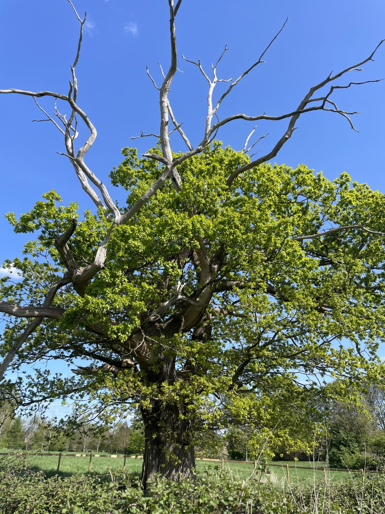
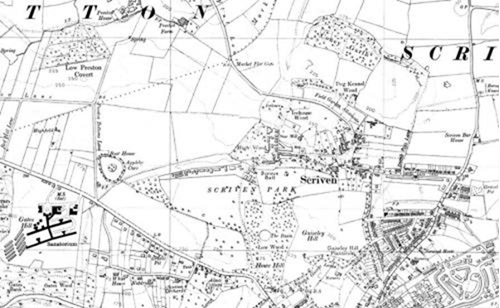
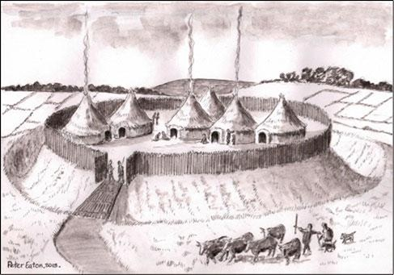
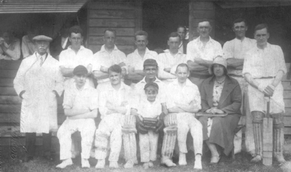

{kind=link}
{kind=link}
{kind=link}
Training ground in wartime
During WWII, Scriven Hall was requisitioned as an army camp and the park was used to train tank crews and infantry.
Discover the fascinating history of Jacob Smith Park, from ancient landscapes to a community gift. Learn about the Jacob Smith family →
These history pages are based on an article written for the Friends of JSP by Kevin Earl.
A research study has revealed that Jacob Smith Park holds significant local archaeological importance and is a relic of a much older landscape associated with the village of Scriven.



The Claro Community Archaeology Group (Knaresborough) published findings in 2013 in The Chronicles of Scriven. Low Wood at the western edge of the park was planted as part of 18th-century landscaping by the Slingsby family. Their estate wall still runs along Scriven Road and Scotch George Lane. Scriven Hall, overlooking the park, was demolished in 1954 after a fire.

Ridge and furrow, evidence of medieval ploughing, can still be seen when the grass is short. A 1629 map shows a farmstead near Scotch George Lane. The ponds may relate to small-scale iron smelting in the 16th–17th centuries and there is evidence of historic water management in the fields.
During WWII, Scriven Hall was requisitioned as an army camp and the park was used to train tank crews and infantry.
The park doubled as the village cricket ground. Teams and spectators gathered here for matches and local events.

After Scriven Park was sold by the Slingsby Family during 1955-56, Winifred and Dorothy Jacob Smith purchased 30 acres to graze their Ayrshire Cattle. Those 30 acres later became Jacob Smith Park.
Winifred Jacob Smith MBE bequeathed the land to Harrogate Borough Council to be used as a public park, following her death in 2003.
Jacob Smith Park opened officially to the public in 2008 and is owned and maintained by North Yorkshire Council (NYC). NYC also work closely with the Friends of Jacob Smith Park who make improvements to the park which fall outside the council's responsibility.